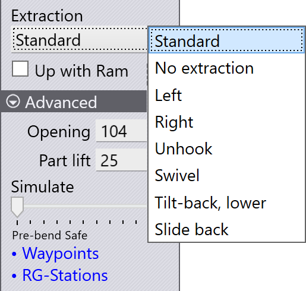
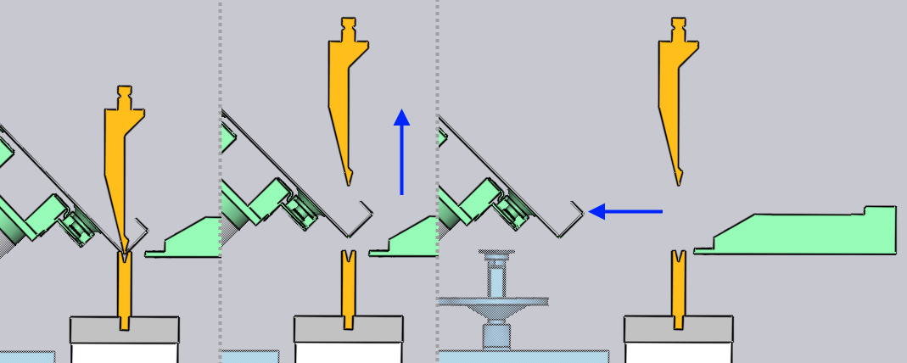
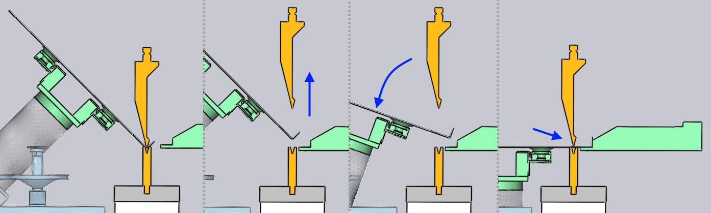
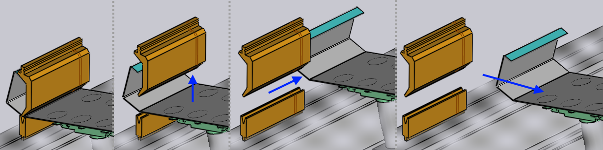
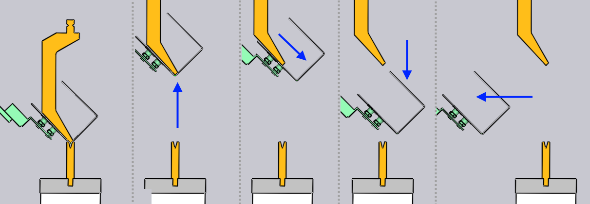
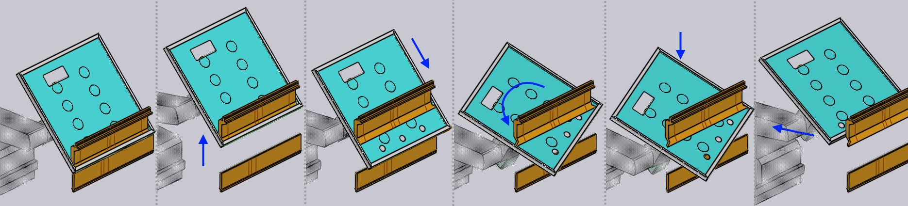
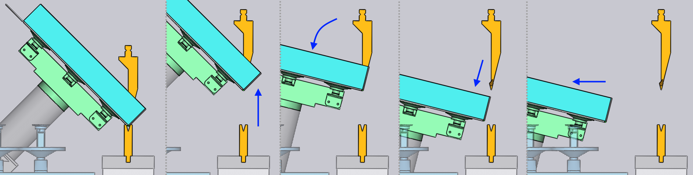

Vyjmutí

Po dokončení ohýbání je třeba díl vyjmout z prostoru mezi razníkem a matricí, aby se připravil na další ohyb. Nastavení v nastavení Vyjmutí vám umožňuje vybrat strategii a poté upravit různé parametry, které tuto strategii řídí.
Parametry se zobrazí v části Rozšířené panelu a pomocí posuvného regulátoru Simulovat můžete přecházet mezi jednotlivými fázemi simulace tohoto ohybu, včetně vyjmutí. Zde jsou základní nastavení:
-
Seznam Strategie odebírání umožňuje vybrat jednu z různých strategií vyjmutí, které jsou popsány níže.
-
Po dokončení ohybu se lisovací trám držící razník zvedne, aby uvolnil díl. Spínač Pojíždět lisovacím beranem dává robotu pokyn, aby zvedl díl tak, aby se pohyboval nahoru spolu s nosníkem. To je užitečné pro některé strategie a nezbytné pro jiné.
-
Nastavení Otevřít ovládá otevření nosníku [1] po dokončení ohýbání[2].
-
Na začátku vyjmutí je díl zvednut z klidové polohy na matrici nastavením Zvednout díl, než vyjmutí pokračuje. Pokud je však nastavení Pojíždět lisovacím beranem*zapnuto, pak se díl zvedne spolu s nosníkem a toto nastavení je nahrazeno nastavením *Spustit díl, které řídí, o kolik se díl spustí dolů po počátečním stádiu pohybu nahoru s nosníkem.
Níže uvedené části obsahují stručné vysvětlení jednotlivých strategií vyjmutí. TecZone Bend automaticky vybere jednu z těchto strategií, aby se zabránilo kolizím v závislosti na geometrii dílu. Nastavení v této části vám umožňují přepsat algoritmus vyjmutí nebo upravit parametry zvoleného algoritmu.
Norma
Standardní metoda vyjmutí se používá ve výchozím nastavení, když je třeba díl vyjmout a zrcadlit nebo otočit v rámci přípravy na další ohyb.

Bez odebírání
Pokud je další ohyb blízko ohybu, který byl právě dokončen, je přibližně rovnoběžný s ním a má stejný směr ohybu, není nutné díl vyjmout a znovu vložit. Díl se pouze otáčí kolem osy Z do polohy pro další ohyb, jak je znázorněno v níže uvedené sekvenci.

Vlevo / Vpravo
Přímé vyjmutí dozadu je někdy obtížné, protože nosník nemusí být možné dostatečně otevřít nebo když má díl hluboké příruby, které se blokují s nástrojem typu husí krk, jak je znázorněno na obrázku níže.
Pomocí této strategie lze poté díl vyjmout doleva nebo doprava. Tento parametr Přesunutí do strany řídí boční posun dílu (v ose Z) před vyjmutím.

Vyvlékání
Při této strategii se díl posouvá diagonálně dopředu a dolů pomocí parametru Přesunout, poté se spustí dolů a vytáhne ven. Níže uvedený obrázek ukazuje jednotlivá stádia tohoto procesu.

Natáčet
Tato strategie se používá k získání složitých tvarů boxů s vnitřními přírubami, které vyžadují ke zpracování nástroje s rohovými segmenty. Vyjmutí se skládá z několika kroků, jak je znázorněno na obrázcích níže.

-
Díl se nejprve posune dopředu a dolů podle parametru Přesunout.
-
Poté je díl nakloněn zpět o parametr Vzdálenost a poté otočen kolem osy ruky o parametr Natáčet.
-
Boční příruby by nyní měly být volné od vnějších rohů razníku a díl lze poté spustit dolů a vyjmout.
Zaklapnuto, pod
Tato strategie se používá při obrábění vysoké příruby úzkým nástrojem se zkosenou řeznou hranou. Pro snazší vyjmutí se díl nakloní dozadu, dokud není příruba rovnoběžná se zadní stranou nástroje. Poté se posune dolů v tomto paralelním směru předtím, než je vyjmut:

Táhnout zpět
Toto je další strategie, která může být užitečná u vysokých přírub. Díl je posunut dozadu a dolů parametrem Přesunout, než je vytažen ven.